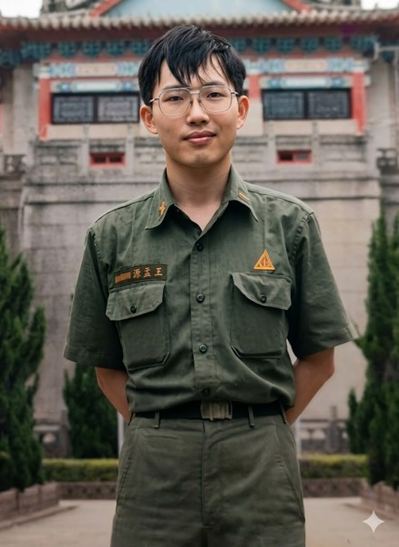

sutton网页有放出原始卫星图，我放大去数像素的。
我想军事评论者之所以有把潜艇分反舰和反潜，显然是受到苏联和美国的影响，毕竟奥斯卡级是水下花岗岩发射器，海狼级专职猎杀苏联潜艇是事实。先生的意思是，其实美苏两国的思路都有点走火入魔了？
二戰期間，坦克還分Cruiser tank/Infantry tank，以及Median tank/Heavy tank，後來全都統一了，原因是技術成熟，可以將衆多角色集成到單一型號，購置、後勤和作戰的效率都因此倍增。美軍的核潛艇從來就沒有分割反艦/反攻擊潛艇；蘇軍早期曾經被迫如此，是因爲（1）技術落後；（2）弱勢海軍，必須打非對稱作戰。詳細來説，蘇聯攻擊核潛艇部隊的任務，並不是與美軍爭霸大洋，而是針對强勢的美軍來做防禦抵抗。美軍的主要威脅有二，航母、和負責獵殺蘇軍堡壘海域中戰略導彈核潛艇的攻擊潛艇（亦即你所提的海狼），這兩者處於完全不同地域方向，所以蘇方可以也必須針鋒相對地搞出反艦型（Oscar）和反潛型（Alpha）兩種潛艇。總結來説，美蘇對抗中的反潛/反艦任務分割，是一攻一守態勢下各自優化的產物，把這些前例套到當前中國海軍頭上，有多重問題：首先，中方明顯在戰略上是要在太平洋和印度洋這種開闊海域與美國對等爭鋒的，所以戰略、戰術、技術思路向來都是摸著鷹醬過河；其次，反艦專用的導彈潛艇必須以載彈量為優先，所以必然更加龐大、緩慢，也更接近戰略導彈潛艇，例如蘇軍的Oscar級，這顯然和09V格格不入；第三，中方攻擊核潛艇的核心任務，是為作爲航母戰鬥群的一部分，對抗美方的航母戰鬥群，所以不可能自我閹割一半能力（參考美軍Virginia級）；美軍戰略導彈核潛艇沒有被壓縮在堡壘海域，也就談不上以在廣闊的太平洋中對其搜索獵殺為單一任務（亦即不能類比海狼）。
2026-06-20 02:27 回复
您在2019-05-12的八方论坛视频《重新洗牌？论中美贸易谈判》中直接说了认为稀土牌没有作用。我当然同意欧美补不上稀土的窟窿是事前难以预料的（即使真的有这种可能也必须料敌从宽）也没有贬低您的意思。
中国在货币金融上走错方向，很可能原因要追溯到进入世贸之前，当时中国对欧美乃至港台的各种金融工具都是广泛吸收学习，从香港拿来的土地财政，从欧美拿来的私募基金，都是如此。包括期货，也是经过投机商恶意炒作后才知道要加强管理（1994-1995上海广州都出现大米期货被投机商炒作暴涨的现象，粮食期货不得不关停，直到09年郑州交易所才恢复大米期货交易）https://hk.crntt.com/doc/1006/2/8/6/100628641.html https://finance.sina.com.cn/money/future/fmnews/2025-02-01/doc-inehyqcz2529072.shtml 离谱的是，上海粮食局的前副局长还声称当年大米期货应该彻底放开涨跌停，大米期货被关停是因为有人炒亏给中央打小报告，还撰文发表在上海期货交易所的网站上 https://www.shfe.com.cn/upload/20170710/1499654867505.pdf
我心中想的一直都是“沒有足夠的作用”，如果説出口的是“毫無作用”，那麽的確不夠精確、可以算是口誤。
金融管理出大問題，是因爲在學術基礎上就整個歪掉了；這一點，我們早已總結過。
2026-06-20 01:42 回复
潘功胜的讲话没有提到私募，提及私募的是证监会主席吴清，还是我之前提到的问题，国内对于VC和PE不加区分，导致提及投资新兴产业时都是使用私募来统一指代。https://www.chnfund.com/article/ARe57d494e-eec4-0d5f-454d-3a21e6a2de30
Okay，鏈接是留言者必須提供、但不是我必須閲讀的，參考《讀者須知》第四條。引用事實證據必須在留言裏簡單總結重述一次，意義就在於我只評論留言，沒有時間去因應每個讀者的興趣而對整個事件做完整獨立的調查，所以請大家注意保持總結的精確性；如果有失精確，而且失誤之處足夠重要，那麽別人可以來更正，就像這裏。不過大家要注意細節失真是否影響大結論，參考《讀者須知》8A。
在這件案例中，證監會主席同樣是“金融管理階層”。VC是風投，PE是私募，VC和PE不分，明顯是矇騙外行來圖利財閥。
2026-06-20 01:06 回复
2015-2020年您对中国用稀土掐美国脖子是持悲观态度的，因为用量少易储存，欧美没有技术壁垒，且早已关注。此外还有大量因经济性未被广泛开采的稀土矿，如印度的独居石矿，在钍基熔盐堆成熟后将成为重要资源。没想到欧美这么拉胯，从第一次贸易战到第二次贸易战中间隔了七八年居然依旧没有动静。（您在去年的节目中说18年建议中国的反击方向包括稀土，是时间久远记忆缺失后自我美化了）当然，在金融危机步步逼近的现在，即使欧美全力以赴在两三年后把稀土产业补上也是于事无补了。
我的印象是當年我接受稀土作爲籌碼之一，只不過嫌棄它太小，主張用更强力、更相關的手段，直指美元霸權根基。如果你找到我說“不應該”而不是“沒大用”、“不夠”的論述，可以再來詳列。“沒大用”和“不夠”，與“包括”；用文藝思維的正負印象來解讀是對立的，但邏輯上不但不冲突，事實上是因果關係。
其實事後證明歐美日治理和執行能力崩潰太過徹底，10年時間連重建稀土提純能力都做不到，是標準的黑天鵝事件，亦即超出事前理性預估的範疇，事後出了意外，不代表事前分析做錯了。
即便考慮了稀土出人意料的卡脖子能力，當年我建議積極替代美元/美債，也仍然是絕對正確的，畢竟現在稀土這張牌也只在美方走完多重經貿制裁、切割之後勉强止損，這幾年歷經Trump/Biden/Trump2的衆多損失不只是動作慢的問題，在貨幣金融上是徹底走錯了方向，易綱在2021年的大賣國只是最突出的案例。
2026-06-20 00:17 回复
一两星期前，我也注意到了几个对于“私募基金”的高层动作，最开始新华社通稿，然后是这个指导意见出台，接着是证监局主任接受采访放风和通气。这个通稿就让人无比下头，一上来定义私募基金是“耐心资本”。连我这种对金融了解是看看先生的科普，都知道私募基金危害重大，更和“耐心”完全是反义，就这么在最高媒体上颠倒黑白、指鹿为马。而且除了看先生博客，国内其实现在很多博主也在科普私募基金危害，并且逐渐为人所知，我印象最深的“内部看美国”：一个视频介绍了私募基金是美国经济的吸血鬼，一个视频也介绍了先生提到的私募和AI的勾连（我觉得算是把先生的观点通俗易懂传播了）。我自己的推测这些动作的起因：一、部分高层和舆论对于私募基金的态度，逼着他们这些人做出动作以做交代应付，二、引入美国私募基金的起手势，并以为AI等先进行业注资偷换概念，毕竟trump访华是带了私募基金老板的 （毕竟花旗也没白来，见了北京市书记、拿到全牌照、还有其他一堆好处）……
還記得公知時代，他們喜歡吹捧美國富豪“樂善好施”嗎？實際上是100多年前針對Standard Oil的反托拉斯風潮，導致巨富階級理解到公關需要，於是開始高調捐錢。這裏的重點在於高調，因爲其本質是公關開支，基本運作模式是花小錢（而且這些錢往往有著隱性鎖鏈）、吹大氣。中國的私募基金也是如此：因爲中方群衆的社會主義意識較高，他們不敢像美國同行那樣絕對地肆意妄爲，必須花小錢製造出幾個樣板，作爲對外公關。以上只是資本的基操，真正的問題在於所謂“監管者”居然也成爲他們的代言人、傳聲筒，也就是實質上的公關人員，這不但違反了中國的“在其位、謀其政”傳統，也違背了西方資本主義中的Agency Relationship，換句話説，不論你用中外哪個標準，都是圖利他人的瀆職行爲。
2026-06-19 23:40 回复
体制内的学者谈论内部问题通常都很拘谨。翟东升教授已经算愿意谈论这方面问题的学者。我想起一件往事，21年或者22年的时候我在推特看到有一个《八方论坛》观众希望博主能够翟东升教授合作节目，然后评论区就有人说博主看得起谁？大概是看博主经常批评国内的部门政策感到不爽。幽默的是22年底翟东升教授在节目《翟东升：未来两年美国对华政策趋势》结尾部分里恰好谈到了相近的观点：他首先同意另一个学者卫东兄（我也不知道具体是哪一位）的观点，认为它（这个它联系上下文应该是说美国）其实挺舒服的，按照翟教授的判断，并非国力对比美国对中国有什么优势，按照他的算法，中国综合国力其实已经超过美国，而是因为美国是玩体系的高手，而我们没有全球视野，只看到自己的一亩三分地，然后更加重要的是，中国国内的斗争意志并没有真正建立起来，并没有真正统一到习总书记说的“敢于斗争，善于斗争”的思维上来，中国国内东南沿海还有四个涉外部门，尤其是涉外的经济部门，他们特别怕痛，他们又特别会说，所以导致中方在对美的应对上不是特别统一，所以美国反华的任何举措从来没有受到实质性的惩罚，从来没有实质性的风险，反而可以在政治经济上获益。那你翟东升教授这么说是什么意思，什么叫“他其实挺舒服的”，什么叫“我们没有全球视野，只看到自己的一亩三分地”？ 翟东升教授算不算看不起其他人？
还有22年一月份谈《为什么必须要搞共同富裕》提到：中国民粹主义兴起的背后的一大原因是贫富分化，当今世界主要经济体贫富分化最严重的三个经济体，第一个是美国，第二个印度，第三个是中国，中国的贫富分化程度比欧洲日本都大得多（注意这个谈话的时间点），同时补充脱贫攻坚计划是提升了底层人，但是中下层人跟最富的人之间的差距并没有有效缩短。他还提到自己在同龄人里已经是“左翼思想家“，但是在他的学生眼里则是妥妥的”右翼“了（按照这个说法就是翟东升的同龄人跟现在他的学生比起来远远更右），而这背后是代际剥削，50后，60后，70后剥削了后来人。还提到了导致社会动乱的三个指标：高通胀率，高失业率，尤其是受到过高等教育群体的高失业率，高贫富差距。他还补充彼时我们PPI往上窜，但是CPI没有往上窜，所以咱们离真正风险还差一步。其实翟东升教授这话的言外之意就是除了高通胀率那个坑没有踩，另外两个坑（高失业率，高贫富差距）我们都踩了。
我没有说翟东升教授的观点一定就是对的，而是有些人不是喜欢诉诸地位吗？那你不同意，你在体制内吗？你是什么级别的领导？说来听听。
你説的沒錯，翟東升已經是中國同行中的翹楚了，至少三觀沒有太大問題。博客拿他來敲打，純粹因爲我只對他有印象，其他人非蠢即壞到我連碰都不想碰；換句話說，是Survivorship Bias。不過，我也不會輕易批評一個人：他迷信西方吹捧，轉述印度崛起的敘事，然後誤以爲美元搜刮值得羡慕模仿，都與博客闡述的正道背道而馳。
2026-06-19 23:24 回复
俄国至今还没有走出苏联解体的阴影，被战争激荡起的民气固然对美西方同仇敌忾，但是对寡头集团卖国的咒骂也是不绝于耳，这是以普京为首的统治集团的原罪，即使他已经尽力做到最好，但是俄国民众仍不惮以最大的恶意去揣测。考虑到战争结束后剩余的乌克兰很可能波兰化，而俄国的经济前景也只是不温不火，此次战争能凝聚的爱国意识显然不会有前两次卫国战争强固，而普京的评价大概也不会非常好，这真是时代的悲哀。
相比習近平治下的中國，當然是遠遠遜色，但你若只看歷史上的老對手們，亦即歐洲列强，俄國的相對國力雖然達不到二戰後的蘇聯高峰，比起19世紀後拿破侖時代還是有進步的。
2026-06-19 23:15 回复
最新从港口附近侧拍的图片显示那个所谓“无围壳”潜艇其实是有围壳的，只不过比较小。此外，根据原始卫星图中潜艇附近J15模型的比对，该潜艇露在水面上的部分就有11米以上（卫星图中J15翼展26像素，潜艇水线宽20像素，J15翼展14.7米，可知潜艇水线宽11.3m）它的实际直径应该是12米以上，和数月前出现的短粗095是差不多的。 sutton说它宽度只有10-11米，有点奇怪。考虑到短粗095也有垂发，那么这艘加长095的角色很可能类似于奥斯卡级和俄亥俄级改装型这样的常规导弹核潜艇，战术运用也应该是类似于奥斯卡级，携带大量反舰导弹，和进行ASuW攻击的大型隐身轰炸机是一个战术作用？我有点奇怪短粗型如果是偏重反潜，为什么也要带垂发？利用垂发的高火力密度发射反潜导弹来压倒对手吗？
沒辦法呀，要評論軍事這類保密題目卻沒有内綫消息，注定只能管中窺豹。像是潛艇直徑，當前的“最佳公開資訊”就是Sutton的估算；我既然沒有更接近第一手的事實資料，也沒有邏輯論述可以否決，那麽即便有懷疑，也必須接受，因爲這就是科學原則。但如果事後證明估算錯誤，責任完全在Sutton身上，我已經盡了一個科學人的全部義務，這也是科學原則。
我已經説過，反潛/反艦分工是胡扯：核潛艇根本不必上浮，先天與世半隔絕，自然成爲機會主義者，哪能事先排除一半機運？
2026-06-19 23:11 回复
当年谈武统发生的四个要素，同样适用于2030年的西太平洋战役，同样最不确定的就是导火索，我想日本再疯狂也不可能主动开第一枪，那么中国如何名正言顺地封锁日本就很费脑筋了（独走的疯子有最好，遇不上是大概率事件）。俄乌开战之前您谈过中美西太对决的剧本，第一波高超音速导弹，第二波隐身轰炸机携带大量反舰导弹，第三波核潜艇，最后航母打扫战场，目前来看，除了第一波中方占优，后三波美方仍或多或少地占优，此外，在无人载具充斥空海的情况下，当时的剧本是否有修正的必要？
我剛注意到這篇正文的結尾是“2026年再來重續話題”；恰好年初在《龍行天下》談張又俠案就是完美的續文，重讀這篇博文的讀者可以到鏡像網站接著看那集節目。
日本的確不太可能瘋狂到主動開戰，但收復台灣的過程本身就充滿了將戰局擴大的機會，再加上中方裝鱉孫裝了這麽多年，忽然强硬必然出乎對手意料之外。
那個西太平洋戰場的老劇本確實已經徹底過時：首先其前提是只爭臺海，這已被新的、更宏大的戰略意圖所取代；其次，無人機艇的出現，代表著30年一次的戰術革命；這裏的制勝關鍵將會在於穩定通信，量子通信再次證明為毫無用處的詐騙項目，真正的核心技術是高頻寬、抗干擾的低軌道密集衛星網；這一點我在半年前那集《龍行天下》中已經討論過了。
2026-06-19 08:22 回复
今天OpenAI宣布解决了一个Erdos Conjecture，我没有足够的专业能力来verify这一突破来自于预训练中的海量搜索联想能力还是长序列逻辑推理能力，请教王先生研究一下。
我们之前的主要分歧在于当前Frontier Model的底座能力中的逻辑能力是否充足，我的观点是AI的逻辑潜能已经达到人类专家，但是没有足够的feedback loop把它们从后训练中挖出来。不知道这一成果是否改变您对AI逻辑能力不足的看法？
https://openai.com/index/model-disproves-discrete-geometry-conjecture/
首先，Erdos很喜歡做猜想，全部加起來即使沒有上千、也有至少幾百個"Erdos Conjectures"，參見https://www.erdosproblems.com/lists；請注意，這裏面涵蓋147篇Erdos的論文，每篇最多有99個猜想。這次被AI破解的這個，微不足道。
其次，我沒有找到足夠細節來100%確定，不過這個AI解似乎是屬於“來自其他領域的解法”那個類別。
這個AI解答Erdos Conjecture的案例，最近公佈了細節，是找到反例從而將該Conjecture證僞；換句話説，是深刻理解了原文字敘事，然後在窮舉過程中剛好碰上相關反例，强點在於語文理解和窮舉速度，本質屬於本世代AI早已展露的技能，而不是真正的高層次邏輯推理達成正面證明；不過從實際應用角度來看，完全具備深入輔助數學研究的能力。
普京最近说俄乌冲突“即将结束”，同时他居然在讲话中直接承认上半年经济下滑，我观察俄国论坛，对俄军缓慢进展不满的人越来越多，大规模进攻迫在眉睫了吗？您在22年底的分析中认为普京要求故意拖延战事以打垮欧盟经济的可能性存在但不大，您后来又说普京为了防止北约升级选择慢慢蚕食，但是如果俄军在22年或者23年一锤定音，当时北约升级的可能大吗？他是对欧洲彻底绝望因此希望彻底打垮欧盟，还是说主要为了保证俄国万无一失才选择这种方式？我在俄国论坛观察到的另一个有趣现象是俄国人对中国的军事实力认知比西方甚至日本还落后，西方至少承认中国在西太的强大压力，俄国人则是现在还以为中国在台海打不赢，但是他们对中国国力的巨大增长又是承认并且艳羡的，这恐怕就是俄国人的骄傲在作祟吧。在俄国彻底衰败的海军方面他们还能相对公平地评价中国，在陆空军方面对中国的新式装备他们甚至可以说是故意闭眼不看。此外，最近俄国仿照中国建立网络防火墙的政策似乎受到民意的很大反弹，普京也不得不出来喊话降温https://k-politika.ru/putin-i-drugie-chinovniki-byut-trevogu-narod-nedovolen/?utm_source=politobzor.net 他希望借战争建立的俄国民族意识和凝聚力似乎还是不太够。
普京访华，西伯利亚力量2号管线依旧没有消息，之前传闻是中方要价过低，和俄国国内价接近。即使杀到俄国亏本的价格，中方也不过每年节省几十到百亿美元，适当砍价是合理的，但是有必要为了这点钱一直压着不签吗？
俄烏衝突是Biden政權外交政略的核心，如果俄軍在Trump上臺之前獲得巨大明顯的優勢，可以確定美方會因之大幅加碼。相對的，Trump對烏克蘭意興闌珊，Putin雖然有了更多的戰術升級自由（例如上月的大規模打擊基輔市内目標），但在戰略上更加不急。真正會讓俄方不計代價（代價是真實存在的，畢竟俄軍沒有技術代差優勢；現在我們看到的緩慢步調，就是保證戰略最終勝利前提下的戰術最優解）盡速解決對手的背景是Trump即將卸任，民主黨的反俄Neocon可能接手政權。這還有至少兩年多，如果届時美國陷入我一直預測的金融危機，甚至可以保證誰選上來都無暇他顧。
五七空戰和九三閲兵之後，國際上越來越多人注意到中國軍力的上升速度，但真正確認美軍在西太平洋局部戰爭中必然失利的，反而只有部分美國專業人員；這不只是因爲他們的水平最高，責任也最對口，他們依舊不是為誠實而誠實，説的永遠都是趕快打錢，以便彌補差距；這麽一來，承認落後對他們的私利有益。俄方的專家同樣也必須私利最大化，但既然中國站在國際戰綫同一邊，承認落後也要不到更多錢，反而可能加速對中采購，那麽印度式贏學自然聽起來更加順耳。
至於Putin所面臨的民意反彈，只不過印證了我在2022年秋天的觀察：他的首要任務是集合民心，所以戰爭頭半年的宋襄公戰法是唯一選擇。這裏的背景不只是俄國民衆被歐美宣傳洗腦，也包括歐系文化沒有2000年集權體制和與之配套的孔孟思想洗禮，根本沒有士人責任的概念，民衆自然也就對代表權貴階級的政府先天不信任。換句話説，歐美文化的基綫是全員刁民，中國反而是不知盡責任、只想享特權的知識階層鬧得最歡。
西伯利亞二號管道因價錢談不攏而鬧翻的傳言，我也聼説了，但（1）沒有證據；（2）每年幾百上千億美元的差別依舊不是小數目；（3）這類超大型國際能源項目從計劃到投產，原本就是10-20年周期，兩三年真沒必要趕；（4）俄烏戰爭明顯長期化，俄方的經濟壓力只會越來越大；（5）美國霸權搖搖欲墜，中方的籌碼越來越强。
2026-06-19 01:20 回复
今天才知道洋山港作为世界第一深水港，它的建设方案居然是一个半业余人士瞿世民（上海港务局高级工程师，主业是港口修建，港口选址勘探只能算业余爱好）花了十几年自费勘察规划出来的，我觉得比文章中的Kerr要伟大得多了，这样无私奉献只求报国的知识分子是中国崛起的真正动力，令人惊异的是他在中国居然完全没有知名度，相比之下，袁隆平起码是由国家提供研究经费。http://www.serveship.com/viewNewsDetails.action?newsInfo.id=12454 https://www.sohu.com/a/337546470_120119476
你這個資歷的老讀者，應該看得出博客的目標聽衆曾經有過幾次階段性的轉變：2014年一開始的原始目標當然是台灣知識份子；後來發現大陸人的反響更強，博客也就逐步轉爲面向他們；等到名聲真正打開之後，又轉向兩岸的意見領袖（例如唐湘龍是明面的，但翟東升自轉180°，從鼓吹學習美元濫發貨幣，改爲金磚貨幣，以及高志凱接力博客四年前所作的金融危機預測，這些則屬於潛水或間接讀者），以便提高政策建議的傳播效率；在最近兩年，因爲越來越多的博客觀點被N-傳成爲輿論主流，論壇上需要大聲疾呼點醒扭轉的三觀謬誤和決策根基越來越少，我開始以未來的歷史學家為寫作對象，留下記錄以方便後人參考我們這群關心國是的布衣，是如何只憑正確認知的力量、引導國家社會走上正途的，並希望能提醒他們維持科學理性態度，繼續造福國家和人類。這位瞿世民先生似乎也值得後世記憶懷念，就讓這條留言作爲一個額外的索引吧。
2026-06-19 01:18 回复
美元霸权衰退之路
认真学习王先生分析日本和美国财政危机引发金融危机从而动摇美元霸权的逻辑框架，罗列最新的几个数据：日本央行政策利率0.75%，年内很有可能加息到1%~1.25%，日本10年期国债收益率上升到2.7%。尽管连续使用外汇储备干预，日元汇率还是多次跌破 160.7 的历史低位；美国回购（Repo）市场中，SOFR 利率（担保隔夜融资利率）维持在3.6%左右，但隔夜逆回购（ON RRP）余额仅6亿美元，已实质性耗尽。储备管理购买（RMP）从25年12月的400亿美元缩减到26年5月的100亿美元，商业银行的准备金余额稳定在3万亿美元附近。综上，似乎仍然处于一个短期的“亚稳态”中。
有關日本財政金融，參考《金融史觀（三）》留言欄第124樓的回復。
至於美國貨幣政策，Warsh一副我和Powell不一樣的姿態，純屬討好Trump的嘴炮。Powell走了多年鋼絲，戰戰兢兢，根本沒有什麽主觀選擇餘地，Warsh也不會有。例如Warsh説要一方面降息、一方面縮表，其實完全不是他能自主決定的：Reverse Repo沒有餘額，就代表著流通性不夠，不應該繼續縮表；股市泡沫加能源價格動蕩，導致通脹壓力上升，就自然不能降息。他若硬要頂著現實蠻幹，結果就是危機提早來臨；考慮到危機應該會在他任上發生（美聯儲主席任期四年，他這一任到2030年5月届滿；我一直預測危機在2028-2030之間爆發，但Warsh應該不是博客讀者，他自己的估算明顯更樂觀些），破罐子破摔的可能性不是沒有，但最優解依舊是能拖就拖。
請問王博士認為，當前日圓匯率如果突破 160，有沒有可能導致日本更大規模賣出美國國債，然後啟動連鎖反應，全球國債殖利率升高和日圓套利回流機制，順便把美國 AI 科技股在短時間內也爆破，然後美國不得不印鈔但又碰到伊朗封鎖荷姆茲海峽通膨加上通膨的兩難選擇，最後像多米諾骨牌一樣連環引爆美國國債？又或者是拋售的規模太小根本沒達到臨界值沒辦法啟動連鎖反應？
我查相關資料，好像是說日本央行雖然有 1 兆多美元外匯儲備，但日本手上能夠動用的流動資金可能就是2000~3000多億美元，如果超過這個規模就必須賣掉中長期美國國債。4月30日的日圓匯率之所以從160升值到155（而且還是休假期間），就是財務省讓日本央行大約在3天內砸了600億美元出手干預；然後不到半個月又重新回到 160。這種規模的干預次數是有限的，儲備遲早他會撐不住。
如果日美金融是一條繩子上的螞蚱，如果日本國債和匯率爆掉，能否引爆美國金融市場？然後眼看連環炸彈要引爆的當下，又傳出什麼「美國和伊朗達成荷姆茲海峽開放」的協議，我看八成又是美國放出的煙霧彈在拖時間，因為美國根本不可能答應伊朗的條件（比如把被凍結的伊朗幾千億外匯儲備歸還或是賠償加上撤軍這些）。但金融市場放出的那些訊息總是沒有任何地緣政治敏感度，伊核協議看起來像是要完成不可能的任務，伊朗有那麼蠢明知已經有了美國把柄一口氣把之前經濟制裁和欠的都討回來還輕易妥協嗎……
過去半年裏，我在《龍行天下》節目中已經兩次討論日元匯率的問題，你應該可以由此看出這的確是當前世界的風口浪尖之一。這裏的重點結論在於，日元作爲國際避險貨幣的地位即將反轉，亦即對比2024年日元同樣貶值到160，然後日本中央銀行稍作加息，資金就瘋狂湧入，Carry Trade被迫大幅逆轉（事實上，自1990年代以來，每次國際危機都有日裔資金大幅回流現象），但這一次不一樣，我判斷日本已經爛到一個足夠的程度，理性資金不敢回流了；這是30年一見的相變，是我判定日元在下一輪國際金融危機中有重要角色的邏輯基礎。
然而我也在博客提到過，日本的徹底崩潰雖然必定發生，卻不會馬上實現，原因是日本有1.3萬億美元的外匯儲備；民間財富可以不想回來，中央銀行手裏的資金卻必須聼首相的。你看過去這幾個月，不正是完全按照我的預測開展嗎？日本中央銀行兩次賣出美元儲備，總共700多億，結果匯率勉强短暫升到155，又很快跌破160（大約就在你發問後不久）；本周中央銀行加息，匯率居然連動都不動了。其實這個結局也被我精確估算：還記得我所説的，“160守不住，必須退守162”嗎？
700多億美元一批次的話，日本中央銀行手中光算高流動性資金就足以再來三四次，這已經足夠拖上一年半載；等到必須賣出美債的時候，700億真不算多，畢竟當前美國財政部每個月拍賣的新債（含填補到期舊債）高達2.3萬億美元，700億還不到對應一天的份額。只算净賣出量的話，上個月是3000億，700億的確足以推高利率若干，但如果分散開來慢慢交易，完全可以避免引發雪崩。總結來説，日本的國債/通脹/匯率問題確實極爲嚴重，必然會是下一輪國際金融危機（亦即我希望能終結美元霸權的超級海嘯）的骨牌之一，但因日本纍積的底蘊還沒有完全消耗殆盡，很可能不會是第一張倒下的骨牌。其實就連Open AI的IPO都比日本更有可能成爲引爆點，但最可能是更小、更弱、更隱蔽的金融機構，正如2008年的次貸危機，其實始於2007年二月New Century Financial的倒閉。
至於美伊戰爭，雙方剛剛簽了連一絲國際法效力都沒有的備忘錄，但我也在《龍行天下》判斷過：“和約談不成，停火卻是必然，只不過會有偶爾的交火”。回憶我討論的細節：和約不成是因爲Trump不可能白紙黑字同意伊朗的兩個主要要求（美方賠款並撤軍），但完全可以搞陰陽合同（明面的那一份沒有必要非得是和平條約不可，所以應該只會停留在停火協定這一級別），由盟友付錢、美方自行決定撤離；本周的新消息正指向我預期的這條退路（Qatar已經自願作爲償付管道）。不論接下來的進程是如何忐忑，至少經濟金融上的逆風進入了緩解階段，所以我也不預期前面討論的第一張骨牌來自這場衝突。
其实我个人认为王兄的主要“劣势”就是缺少地位，很多质疑的声音归根到底就是王兄没有“地位”，比如谈金砖币在内的新国际储备货币构思，翟东升教授跟博主批评的风云学会陈经在微博都谈过，他们的评论区也有人反对，但是总体来说相较王兄这边的反对的声量较小，而且语气也更为温和，总体不像博主这边这样言辞激烈，嘲讽这个，嫌弃哪个，骂王兄居心叵测的。如果王兄真能在20，21年带令郎来大陆定居，在智库任职，凭着22年那篇获得最高层批示的文章，绝对可以在评正高级职称上开绿灯，甚至可以承包一些国家级重大课题；这要是干多年提升履历再尝试参选什么“长江学者”，“万人计划”，一旦评上了，我敢打包票质疑王兄的声音能少一大半。（小编就不用发微博了，我只是网上冲浪多了有感而发）
你説的，的確是追求名利前提下的最優解，但我的任務是求真、然後傳播真相，順便教導科學思維方法。如果我走那條路，哪有說實話的自由？（事實上，連不説蠢話/謊話的自由都沒有；你以爲《觀網》的編輯、或者管技研的地方幹部不知道核聚變發電和量子通信/計算有問題嗎？上面要求發文吹捧的時候，能拒絕嗎？）不能說實話，反而被迫迎合權貴，又哪有臉來教導求真方法和態度？固然庸人不知敬畏科學真理，但人類歷史上何時要靠庸人做出正面貢獻來著？現在博客閑雲野鶴，可以100%誠實批判，至於傳播洞見，建立名聲之後，那些名利之徒自然會來抄襲剽竊，正合我用，又何須我自己去趟渾水呢？
2026-06-18 14:08 回复
是九二共识吧？
https://www.bilibili.com/video/BV1jc41117Yr 养鸡和施佬这段节目提到17年朝鲜进行增强原子弹试爆时，美韩举行大规模军演并有转为实战的可能，中方进行了一系列备战，其中就包括准备对韩国进行登陆突击，不过当时即使是预案仍然是“尽量不对美军基地发动攻击”。
是“九三共識”，指九三閲兵之後，理性專業人士理應達成的“美軍在西太平洋局部戰場必敗”共識。
此一時也、彼一時也。在十年前就談驅逐美軍、登陸日本，純屬意淫；現在我們談五年後，時間依舊很趕，所以習近平才會那麽着急。
請注意，擊敗來支援台灣的美國海軍（假想性討論，實際上不會來）是一回事，登陸並占領美軍基地是另一回事。
2026-06-18 13:33 回复
一檔政治評論節目，情報從業嘉賓的觀點是，促成特朗普訪華的原因是，中方發現自己的政府網絡被美方攻破，且最終确认，是源於比Mythos更高級的不知名的AI模型。於是，綏靖成為首選，“MAGA運動是美國人民的偉大復興”與“和平統一正當時”等政宣論調陸續出現，以迎合特朗普。
中方專業人士，視其為核彈式毀滅力的“新曼哈頓計劃”。
而華為韜定律的匆促發布，是因為科研進度未如預期，安撫上峰，不得不的表演。
正正是因為AI晶片國產進度不利，導致錯過H200進口契機。當時政策宣導是不允許進口H200。最終結果就是算力不足，造成AI模型迭代方面差距越來越大，以至於才發現美方新曼哈頓計劃，且只知道房間進過賊，但抓不到任何痕跡。
更進一步，特朗普要接見Anthropic行政總裁達里奧·阿莫代伊（Dario Amodei），AI模型的代際優勢很可能點燃特朗普對華主動出擊的欲望。
https://m-pre.qingting.fm/vchannels/509883/
對AI、或者網絡安全稍有概念的人，都知道“源於更高級的AI模型”是純粹騙人的蠢話。我的建議是，那個騙子、提供平臺的節目、以及整個頻道，都應該在心中貼上“職業説謊者”的標簽，從此敬而遠之。
這些騙子不可能提供正面證據；你在明顯沒有任何證據的前提下，轉述蠢話，已經違反了《讀者須知》第六條，禁言兩個月。
2026-06-18 13:22 回复
爱泼斯坦文件里没有中国官员这马屁拍得离谱而诡异，只有作者默认中国政府高层官员和华尔街等美西方deep state深度勾连这吹捧才吹对了，然而先生仅仅去大陆几天就发现中高层官员和知识分子大量支持以色列，谁知道呢？讲到这不得不提一下“百人会”这个类似共济会性质的组织了，基辛格专门组建的把中美两国华裔权贵都拉进去的组织，宗旨是“促进中美之间的相互了解、政治、经济、和社会的交流”，入会只能推荐，其作用不言而喻，连达成“九二共识”的辜汪会谈，都是汪道涵委托百人会成员向李登辉转达意愿促成的。
我知道百人会，是因为翻查著名的选美女舰长韦慧晓的履历，此人普遍被怀疑是“广西王”韦国清的后代，2000年大学刚毕业就到华为当了四年总裁秘书，当秘书当腻了跑出来到西藏玩慈善顺便拿了个选美十佳，然后接受了“百人会英才奖”，一边还能顺道读博，12年地球物理博士毕业前夕突发奇想参军，打个报告直接就授予少校军衔进入辽宁舰接舰部队。一般只有在军校本硕博连读的生长军官才授予少校，直招的博士军官只有上尉军衔。同年10月升任辽宁舰副航海长时，她还在大连舰艇学校学习，因为升军官必须有军校履历。在航母任职的38个月，她在军校呆了20个月。她甚至在央视《开讲啦》节目中对着台下的海军官兵说自己第一次参加辽宁舰集训时习惯性地鞠躬而不是敬军礼，我要是台下的人早翻白眼了。就这种关系户现在居然是052d驱逐舰绍兴舰的舰长，上校军衔，真是让人忧虑中国军队的战力。这些事例不是道听途说，而是从官媒的公关稿，央视的节目，乃至她自己的嘴里亲口说出来的。确实，只有自我感觉极度良好的红三代才会把这些事迹当做军功章一样历数家珍。https://zqb.cyol.com/html/2016-09/07/nw.D110000zgqnb_20160907_2-01.htm
http://m.news.cctv.com/2019/05/06/ARTIcweE5Qp66iEv84fkr8Mn190506.shtml
我已經説過很多次了，權錢交易等腐敗現象是普世人性。現代中國在國際上相對清明，完全歸功於習近平一個人，其他的非政府勢力如文藝、媒體、學術、企業等等，自私腐敗比起美國不遑多讓，甚至猶有過之（尤其學術界）。我們早點認清這一點，就可以早點為習近平退休做準備；即便社會輿論聲浪的作用不大，但若是切中要害，做出正面影響的幾率縂是有的。
2026-06-18 12:06 回复
王先生，您怎么看昨天的潘功胜和丁向群在陆家嘴金融论坛的发言，其中潘的发言提及私募股权融资对金融的先进制造业的发展让人摇头。当前中国股市正在步美日韩的后尘，AI泡沫越吹越大，实在令人苦笑不得，即便在AGI几乎无法实现的当下，所有投资者都疯狂的相信AGI的替代叙事，一旦未来2-3年爆发金融危机，但愿中国不是受伤最严重，恢复最慢的那个。
參考下面125樓的答復。
不過不要擔心，美國金融狂歡之離譜，不是區區模仿者可以觸及的。
2026-06-18 11:59 回复
王博，您之前提到过“博客已經反復論證過，高等金融是現代工業國家自我毀滅的通道，其中又以private equity私募基金最爲惡劣，原因是金融業的唯一正面價值在於疏導游資投入實體經濟（亦即將金融資本轉化為產業資本），而私募基金恰恰反其道而行，其基本運作邏輯正在於不擇手段榨乾實體產業以提取金融資本。”
最近国务院发表了一份文件《国务院办公厅关于加强监管防范风险促进私募投资基金高质量发展的指导意见》，这份文件是否意味着领导层已经注意到了私募基金的危害并且主动出手纠偏与治理？
您之前还提到过“ai和private equity并列為當前美元經濟金融體系“樣樣泡沫”中最離譜的兩個焦點”，这是否也意味着高层已经在主动构筑防火墙应对美元泡沫可能引发的危害？
我對中國的金融管理階層，早已走完“期望->失望->絕望”的全過程，一點模棱兩可的蛛絲馬跡，從Bayesian邏輯出發，必須以最負面可能性來解讀，方屬合理；參考上面的126樓。
2026-06-18 11:57 回复
理想
上月先生在唐湘龙的节目上强调“理想”的意义。
最近我看到这段话，我觉得非常贴切：
“一个没名气的导演，拉了一帮没学表演的素人演员，用1400万拍了一部电影，多月票房干到十多亿，评分升到9.2。
一个只有初中学历，修摩托车赛车手，靠对摩托车的钟爱，搓了一台机车，在世界锦标赛连拿五次分站冠军。
一个半道转行的解说员，没教练证的教练，用别人不看好的训练方法，让中国少年足球队拿了世界冠军。
这个2026年真的好神奇啊!”
我觉得少年足球队夺冠和《给阿嬷的情书》的成功不是限于工业和科技业，而是在文体业突围，更加令人振奋。文体产业过去因为资金、体制等很多壁垒，被认为都是小圈子的东西，积弊良多，即便有志之士在酱缸里也难有作为。但是，有“理想”的从业者，通过不一样的圈子外的路径也在一点点打破。
這裏的道理，我多年前就解釋過了：求真、求善、求美的領域，和功利格格不入。文藝創作和體育競技，恰恰是求美的典型，我們在2026年就能看到這些正面案例，的確值得慶幸。
2026-06-18 11:52 回复
补充一下，张尧学的“透明计算”获得14年国自然一等奖时，争议非常大，当时中国计算机学会（CCF）在其官方网站发布了“建议政府退出国家科技奖励评审”的声明（https://www.chinastor.cn/yunjisuan/0F5312452016.html），声明中提到，CCF已向国务院办公厅、中国科学技术协会、科技部和教育部递交了《中国计算机学会关于政府退出国家科技奖评审的建议》(以下简称《建议》)，建议政府有关部门退出国家自然科学奖、技术发明奖和科技进步奖等奖项的评审工作。然后很快下架，现在回过头来看，圈子里不是没有人知道有问题，但是问题依旧这样延续下去。就像协和4+4，你把它放在阳光下上称，就发现这个制度四面漏风，而且其实体制内早就有像杜斌副院长这样公开发文质疑，但是最终还是要等到董小姐跟人当三的事情曝光出来，一伙人持续跟进才挖出来。亏的王辰院士还有脸搁那吹什么“希望之队”，“梦之队”，“德不近佛者不可以为医，才不近仙者不可以为医“。
所以我說，張堯學這件事真沒有核聚變發電和量子通信/計算那麽惡劣，因爲並不是整個行業沆瀣一氣、同流合污。
2026-06-18 11:45 回复
博士在《大停滞的真实原因》一文中曾经分析过----几十年来科技发展创造的经济利益主要被美国富豪和权贵阶级给攫取了，从而导致了美国收入中位数常年停滞（但是通胀却让货币进一步贬值）。所以就算AI如117楼所说能创造巨大经济价值，但是增益却更有可能主要被少数人拿走，而留给大众的确是海量失业和结构性危机（如115楼所说那样，所以现在一些硅谷富豪也在为了抵御潜在人身安全威胁而修建地堡），这样的科技进步对公益的作用为负可能性也是存在的（科技本来就有很强的潜在负面作用，比如随着工业革命后的技术进步杀人的方式变得多种多样而人的肉身防御随之进步的幅度却比较有限，可以说是让这个世界的潜在危险变得更多了）。
是的，市場體制原本就必然導致貧富不均無限加劇，而產業從勞動密集/能源密集向資金密集/技術密集轉變的過程，不但進一步加速貧富不均，也使早先世代的疏解方案過時（Render obsolete），例如工會和福利政策。博客建議的：預先過濾排除假未來科技詐騙項目，已經是遠遠最最和緩、起碼的步驟了，中方管理高層依舊毫無警覺；一個自稱社會主義的國家和政黨，居然連這樣的基本覺悟都沒有，還有人說“大内自有高人”，真是讓人搖頭嘆息。
2026-06-18 08:35 回复
后注6
【後註六，2026/06/15】Sabine Hossenfelder剛剛引用最新研究，嚴厲批判了2013年以來充斥媒體公關的“量子糾纏蟲洞”炒作（參見《Did Physics Just Lose a Brilliant Idea?》），至此這個在誠實的内行人眼中極端明顯的騙局蓋棺論定。然而天文和高能物理沒有商業應用、無法簡單騙錢，這道胡扯原本只是兩個老超弦人發明來騙論文用的（超弦40年來的幾千個“突破”，基本都屬於同一類別、有同一目的），但很快被量子通信/計算詐騙集團借用，成爲唬人的新花樣之一，是他們在股市上割了幾千億元（在美國以美元計價、在中國以人民幣）韭菜的幫凶。這裏讀者應該特別注意的，是博客在批評這類假未來科技騙術時常提起的不對稱性，亦即適合做詐騙藉口的新論文剛面世時，會有鋪天蓋地的“科普”助推公私投資，但揭穿騙局的論文卻只在極少數打假博主間流傳，被騙的資金別説追回，往往反過來用以加强詐騙集團對媒體的進一步掌控，從而徹底封鎖真相的流傳；想要找這方面實際案例的讀者，可以在大陸互聯網上搜索看看博客對丘成桐的評論消失了多少，即便這些評論都建基於絕對明確的美國官方文件之上。
后注6
【後註六，2026/06/09】三年多前寫這篇正文，總結了更早在幾個座談會中所談的預估和建議，亦即國外傳統車廠在中國新能源車企的先進技術衝擊之下，將在競爭中日益落後，從而引發越來越強的保護主義壓力。中方應引導他們改爲在中國設計生產，然後貼牌外銷，借此化解部分政治阻力。當時我舉的例子是Stellantis，原因在於歐洲企業對外開放程度比美日韓更大，對轉向依賴中國技術的文化反感和政治抵觸相對略低，而Stellantis在歐洲大廠中效率最低、處境也將會是最絕望的。後來Stellantis果然與大衆一起領頭試水，今天則看到這則新聞（參見《Nissan Launches ‘From China’ Export Strategy with Debut of Navara Pro Plug-in Hybrid and Primera EV》），報導日本大廠中最弱的日產汽車，在菲律賓官宣全新的“From China”“中國產”策略，準備把未來在第三世界市場銷售的新能源型號，打包交由中方的夥伴設計製造。雖然這是失敗之下不得已的選擇，應該不足以挽救管理僵化、行將就木的日產，不過作爲第一個屈服於現實的日本大車企，卻也有指標性的歷史意義。
后注1
【後註一，2026/06/08】博客厘清常見的狡辯術已有多年，但在傳播真相這個任務上，授人以漁同樣也是遠遠難於授人以魚：邏輯辯證方法論解釋得再清楚，也難在缺乏科學訓練和修養的群衆中推廣，《觀察者網》上正有這麽一則新案例（參見《“嘴炮”，同样保家卫国》），完美示範了正文所討論的扭曲語義來帶歪辯證方向的伎倆，而且居然沒有任何讀者留言將其揭穿。文章中强調“嘴炮”的正面價值，但其對“嘴炮”的隱性定義卻是等同“爭辯”和“宣傳”，這當然是絕對錯誤的，例如毛澤東一輩子不知和他人爭辯過多少次、也對宣傳有著絕對的重視，但你能因此就說他喜歡放嘴炮嗎？“嘴炮”的正確定義應該是“沒打算或根本不可能實現的空口威脅”，其重點在於虛假和空洞，典型範例是幾年前Pelosi來臺事件；我不是說當時中方非動手不可，而是既然不打算事後升級就不應該事前做出虛假威嚇。邏輯辯證也是Garbage in garbage out（垃圾進，垃圾出）；尤其語言是思維的載具，連基本定義都搞差了十萬八千里，結論自然是錯的，辯證過程也只剩下愚化所有參與者和旁觀者的負面價值。更糟糕的是，語言隨使用而自然演化，並沒有先天的理性規範或扶手；像是今天的例子，若是放任蠢話傳播，進一步混淆“爭辯”和“嘴炮”，以互聯網時代Meme（模因、梗）的傳播速度，説不定幾年後“嘴炮俠”會成爲網紅自誇之辭（亦即模糊了真與假之別、實與空之分），不但國際思維和公共輿論可能因而印度化，連帶著整個社會的三觀都要倒退，台灣綠營是前車之鑒（例如“民主”、“自由”、“多元化”等等）。今天趕急批判，希望挽救及時。
教育口也有自己的“刘绍勇”
先生前几个月和上月还在多次谈论Epstein和丘成桐、北京清华的关系，我今天一大早看到了观网推出的视频，内容是：爱泼斯坦文件里没有中国官员，为什么？这真是掩耳盗铃、贻笑大方、甚至讽刺至极。
我觉得邱勇绝对也算刘绍勇之流，作为清华大学校长党委书记一二把手，长达十年之余。该校，可能依仗学校在高层的校友权势（？此处为个人推测），对各类负面信息也是各种压制和管控，这些年小到连“自己校内学生因为外校女友考试作弊反而出手殴打外校老师”、“校内整修植被砸死路过的外校老师”，这样的丑闻，都是极尽掩盖。而且屡次发生这类“低级”问题，也可见该校日常的行事作风和问题，大有上行下效之嫌。
“Epstein文件裏爲什麽沒有中國官員？”這類極端離譜的腐敗當然都是小圈圈，地球兩端敵對國度的小圈圈不共通，不是廢話嗎？中方若比美國勝出一籌，也歸功於習近平本人；媒體不論公營私營，對腐敗集團向來沒有揭發、只有遮掩、甚至洗白，包括這篇文章本身在内，所以的確如你所説，是很大的反諷。
個別學術管理官員的責任，連習近平的反腐機制都覺得難以確認，我一個外人當然不可能做出精確批評；但整個部門的極度腐敗無可置疑，所以有責任的官員必然很多、也很惡劣。
2026-05-26 06:01 回复
张尧学被双开的通报：新华社北京5月21日电 经中共中央批准，中央纪委国家监委对中南大学原党委常委、校长张尧学严重违纪违法问题进行了立案审查调查。
经查，张尧学丧失理想信念，背弃初心使命，对抗组织审查；违反中央八项规定精神，违规接受宴请；在组织函询时不如实说明问题，在干部选拔任用、授予学术称号、荣誉表彰等工作中为他人谋取利益并收受财物，助长学术领域不正之风和腐败问题；廉洁底线失守，违规收受礼品、礼金；毫无纪法底线，将公权力异化为谋取私利的工具，大肆收钱敛财，利用职务便利为他人在企业经营、职务提拔等方面谋利，并非法收受巨额财物。
链接：https://www.xinhuanet.com/20260521/25d27d78d99b48998e24bad06c5e70c0/c.html
幾年前就有讀者在留言欄提醒，張堯學是中國科研和教育管理雙重腐敗的代表性人物。不過他是否最爲惡劣，可以有正反兩種看法：這裏與大對撞機、核聚變發電、量子通信/計算的關鍵差異在於他的學術詐騙是個人單幹，而不是整個行業異口同聲忽悠外行。從私德看，他更大膽、更極端；從公益看，那些學術山頭轉詐騙團隊的危害遠遠更大，因爲腐蝕的是行業所有人，而且國家受騙的損失也更高。
2026-05-26 05:59 回复
今天知道了一个俄罗斯俗语“последнее китайское предупреждение”“中国的最后警告”。由来是上世纪五六十年代美军侦察机频繁入侵中国领空，中国不断发出严厉警告但是没有任何动作，据说到1964年警告的编号就达到了900号。中苏交恶之后这就变成了喜欢编笑话的俄国人的笑柄了。可见这种言语起高调，实际不反击的传统在中国由来已久。
嘴炮是弱者的特權。中國老一代精英只不過後知後覺：國家强大了，卻依舊抱懷弱者心態。
2026-05-26 05:48 回复
读者可以访问“https://wmyblog.site/search?include=AI技术” 来搜索博客AI方面的内容。
好的，謝謝。
2026-05-26 05:37 回复
后注20
【後註二十，2026/05/22】2025年11月4日，UPS2976班機在起飛過程中，因左引擎自行脫落而墜毀，當時我便評論MD11的製造商波音恐難辤其咎；昨天NTSB舉行了聽證會（參見《
NTSB Investigative Hearing: UPS Flight 2976 Crash During Takeoff》），證明果然如此。事故起因是引擎支架連接凸耳Bulkhead Lug因金屬疲勞而斷裂，而此凸耳因設計强度不足，開裂現象其實極爲普遍，光是例行檢查中被發現然後上報FAA（因爲波音始終堅持其為“非安全相關”，因此上報並不積極，不能排除實際案例遠超此數；參見下文）的案例就有至少十起，然而FAA不但沒有提高檢查頻率，居然還反其道而行，即便上報的開裂事故中，凸耳的平均壽命只有8千次起降，依舊在2015年火速（不到一個月，其實可以稱爲“光速”了）批准波音的申請，將强制檢查周期從1萬9千次起降增長到2萬9千次。在聽證會中，FAA官員承認受波音申請文件的欺騙，並沒有考慮開裂的頻率，更因爲波音堅持即使斷裂也不會有安全隱患，輕易批准了檢查延期。事實上MD11的前身DC10，曾在1979年5月25日的American Airlines美國航空191班機空難中，因完全相同的左翼凸耳斷裂而同樣導致引擎脫離，在起飛過程中墜毀；雖然該凸耳曾因維修不當而承受撞擊，但簡單的邏輯就可以總結其不但是“安全相關”的部件，而且一旦斷裂，就無可挽回的必然全機損失，所以所謂的“非安全相關”明顯是睜著眼睛說瞎話，偏偏11年前，上至監管單位，下至乘客群衆，人人都信任波音的“專業權威”。我在得知這些細節之後，聯想到的正是中方的監管單位和群衆，同樣接受利益集團的“專業權威”，即便核聚變謊言炒作已有70年的反復失敗前例，更有簡單邏輯可以證僞其物理和工程可行性，依舊將核聚變發電列為國家科研投資的首選，從而再次證明了貪婪和愚蠢是無分中外的普世人性。
花旗获得券商牌照，看起来金融层打着开放引狼入室被您一语言中了，希望不是习近平的妥协。
唉，這次招待Trump，雖然沒有奢望什麽“友誼”，但對“緩和”還是有幻想的（我並不是說不應該客氣，而是“緩和”注定只是表面，敷衍美方可以，但必須優先防範己方放下戒備，這在金融、教育等領域充斥著帶路黨的背景下尤爲重要），這也就給了底下的專業漢奸國賊操作空間，可以從小處挖國家的墻角。說到底，就是戰略參謀們後知後覺，被美國反復企圖謀殺20多年下來終於有點概念，但認知依舊不夠精確絕對，所以留下餘地，徒然以柄授予内外敵人。
2026-05-18 04:10 回复
Fermi曾经讽刺过“3个参数画大象，4个参数鼻子动”----通过大量地增加参数来使得自己的模型能与实验较好地匹配是前辈物理学家们所讨厌的，但是如今所谓的“人工神经网络”“深度学习”其实跟生物神经网络没有太大关系，却更像是通过无限地增加模型的参数并用天文数字级别数据去拟合一个特别特别复杂的函数。这种范式如果最终能主导未来科技进步的主流那才是真正令人遗憾的。（反倒是AGI做不出来，并且DeepLearning这条技术路径在科技创新这种真正需要创造力的领域不断受阻才是正常的【当然学术造假确实能用现有AI批量生产这也算是本世代AI的一个主要副作用】）
本世代AI的本質是統計機率和非綫性適配，乍看之下確實讓人失望，但它在文藝上的驚人成就，指向一個邏輯結論，就是人腦文藝能力的本質很可能也只是統計機率和非綫性適配，難怪不如邏輯思維那麽珍稀，從而間接幫助解釋了爲什麽理工科選拔比文科嚴得多。
我們再考慮後工業社會中，真正從事科技研發和生產的人員是極少數，他們的產值通過各式各樣的公私組織和交易，反而有絕大部分被重新分配給管理者和服務業，這是社會群體的平衡需要和市場機制的必然結果。然而管理和服務包含許多文藝性工作，而且越白領越文藝，那麽本世代AI能取代大部分底層文藝工作，當然代表著它將帶來顛覆性的經濟價值。科技的意義原本就在於作爲促進經濟生產的工具，它的本質是否崇高深邃，並不重要。
這裏有一些AI輔助數學證明的案例討論：https://www.guancha.cn/xinzhiguanchasuo/2026_05_16_817215.shtml，大家可以參考。它們反映的不是AI的邏輯能力，而是遠超舊搜索引擎的廣度和精度，尤其是無需Verbatim逐字精確的語文理解力，能幫助數學家找到無名的前作和其他領域的解法，這印證了文藝智能可以輔助一切白領工作，包括最高級的邏輯分析。
金融口真是蠢蠢欲动想“自杀”
就如先生所讲，因为中美这次会谈的释放信号还是老掉牙的利益大于分歧，合作共赢才对世界更有利，这种基调奠定又给了金融口的汉奸们蠢蠢欲动的借口。本来前几天看放出的新闻谈判内容看似还都不涉及金融，但是该来都会来，今天一早看到 《尹力会见美国花旗集团董事会主席兼首席执行官》https://mp.weixin.qq.com/s/rqG-sx2sBczBOOu0ZWPMpA，内容满屏的“金融创新”真是让人火大。只是接见的是北京市长而非央行领导，不知道是虚与委蛇还是有实质推动。如果是前者，那最起码也是给这种基调加码，进一步给一些脑子不清楚或者揣着明白装糊涂的官员上下其手“泄压”。
Trump剛離開，五月15日的《求是》就刊出由習近平親自署名的頭條文章《做强做优做大实体经济》https://www.qstheory.cn/20260515/b875d723c32f4df8876d45f7b178aa33/c.html，這其實是給那些鼓吹“金融開放”的官員和媒體一個大巴掌，說“我知道你們在搞什麽鬼，我不會再次容許金融賣國”。
這當然是好事，但他一個人不可能攔住100%的漢奸、國賊，易綱和劉紹勇殷鑒不遠，為中美鬥爭定下誠實的基調，才是將杜絕賣國制度化、政策化的正道。當然為金無怠正名，完全可以低調地做，在警示内部官員的同時，不引起國際爭議，畢竟前者對中式官腔要敏感熟悉得多。
2026-05-17 10:35 回复
除了115楼提到的“大规模白领失业导致的消费低迷与结构性危机”，本世代AI还将导致造假（学术造假/各种阴谋论造假/各种伪科学理论凭空吹牛/社交媒体制造各种假消息等等）成本进一步降低以及给了部分蠢人不切实际的自信（已经能看到蠢人利用LLM试图证明“黎曼猜想”或凭空捏造自己的伪科学理论，在AI的加持下，文章中从充满了各种公式从而进一步提高了分辨门槛）再加上AI泡沫可能导致的潜在金融危机，真不知道本世代AI的发展是弊大于利还是利大于弊（还可以进一步思考，就算强人工智能真的能做出来，对于社会公益来说就一定是好事了【考虑其潜在危害也同样巨大】）。
學術界的假大空風潮，起源遠早於本世代AI，而且一直在指數性成長。AI的出現，可以反過來作爲一個打破臨界的契機，讓科研管理階層不得不面對現實，做出應對。當然這不是定數，需要心懷公益又有科學素養的人指明問題本質和解決方案。世界的運行，原本就是一系列的危機兼轉機；能正確應對的族群，才有長久興盛的權利。
回 LoveClem:
当代AI是真技术进步，是效率的倍增器。比如将AI运用在社科领域，就可以大大提高事实案例的检索和积累效率（AI粗筛，人工再精筛）。有了详实的事实库，学者就可以基于此做真科学。所以这是社科研究范式改革，引入科学方法的好机会。如果把 AI 生成的数据照单全收，问题不在于AI，而在于使用的人。天生我材必有用，将自己的天赋和AI技术有机结合，符合时代精神。
是的，讀者還可以參考《金融史觀（一）》留言欄第6樓的討論。
2026-05-16 03:47 回复
现有AI泡沫是建立在本世代AI最终可以通向AGI从而引发第四次工业革命的预期上，然而： 1>人类对大脑理解依旧肤浅 2>关于空间概念，本世代AI基本没有太大希望能解决(即便无人出租车可能通过取巧的方式实现，但L5级别的纯视觉无人智驾多年来却依然无头绪；机器与人类视觉能力的差距（1） - Blog如文章所说人类的视觉/空间直觉系统其实是很奇妙的，但AI专家们根本不关心也不理解其运行机制，所以基本没有希望达到同一水平） 3>关于运动控制，如109楼所说，也并没有完全解决（除非机器人能自主地进行复杂度足够的体育运动并在不作弊的情况下击败人类） 4>本时代AI主要应用于文艺方面（就算在这种AI的甜度领域，像《凡人修仙传》这种顶级质量作品依然需要人类团队的参与），在编程和军事方面也可以起到辅助作用并带来不错的收益但无法完全替代人类的所有工作 5>最重要的一点，在一个摩尔定律快到头的时代（鉴于过去几十年的信息技术革命都是基于摩尔定律的），爆发一场信息技术领域的工业革命级别进步可能性有多高呢 。当然本世代AI是一个重要的技术进步，但是它更像是第三次工业革命的巅峰之作而非第四次工业革命的开端。
一年前我曾在《龍行天下》中説出“90%以上確定本世代AI做不到AGI”，這裏的重點不在於“90%”、而在於“以上”：詳細來説，光靠目前的增加電力、算力投入和零星的算法細節優化，做到AGI的可能性是零；之所以留下一點餘地，考慮的是Paradigm shift范式轉變級別的突破，亦即又偶然撞上Emergence phenomenon。這個要求並不太嚴苛，畢竟在過去20年，光是AI領域本身就有一連串的類似好運；然而像是Deep learning和大語言模型其實局限性很强，再有新突破如果不是明顯更深、更廣、更高，應該也達不到AGI；不過范式轉變的不確定性很高，所以我從寬估算。
以下分條回復：
1）從人腦出發的AI路綫，和本世代AI無關；後者是瞎貓撞上死老鼠、偶然發現的黑箱作業。
2）你找到的這篇文章是2019年的，少數細節已經過時，但我認爲主軸依然正確：亦即本世代AI還沒有撞上對應空間概念的死老鼠。
3）沒有空間概念配套的肢體協調，並非全無價值；正如在衛星導航普及之前，找路也分有空間概念和沒有兩種：後者是如“看到大榕樹右轉、再過兩個紅綠燈看到麥當勞左轉。。。”，高度依賴試錯+照抄+死記，機器人亦然。
4）AI還無法一次做出高層次的完整娛樂視頻，但對底層的細節工作可以有降本增效的助益，正如編程也是如此。
5）本世代AI有各式各樣的可見局限，包括電力、算力等等。我們應該自問的，是爲什麽這麽熱鬧、投資如此之大呢？技術本身的價值大約只占1/4（例如Google的4萬億美元市值，去掉泡沫，大約應爲1萬億），另外3/4其實反映的是“美元樣樣泡沫”的金融敘事需求。所以與其擔心摩爾定律的終結對AI熱潮的影響，我更關心美元金融危機的爆發。
美国在伊朗战争中的窘态似乎打醒了一些neocon，Bob Kagan撰文《Checkmate in Iran》https://www.theatlantic.com/international/2026/05/iran-war-trump-losing/687094/ 承认美国在伊朗遭遇不可扭转的失败，后美国时代即将到来，Max Boot发文承认“目前除了潜艇部队美军在其他方面毫不占优”“台海开打美军的第一反应是逃出战区，关岛也不是堡垒”https://www.washingtonpost.com/opinions/2026/05/11/us-china-militaries-assessed-by-cia-veteran-china-expert/ 伊朗战争固然加速了美国衰落进程，但是若能让美国避免被中国直接在战场上羞辱，似乎也并不算差。真的很担心美国提早把日韩台打包卖给中国，这样对中国并不是最优解。
票選制的本質必然包含民粹（因爲票選制必然歸於媒體資本主導，而資本必然需要愚民以便提高報酬率），所以打包和解很難。
Bob Kagan會高調宣傳對伊戰爭已敗，並不是Neocon性子改了，而是他屬於建制派，出於國内黨爭的需要而羞辱Trump；這一點可以簡單從與俄烏戰爭的對照看出來。Max Boot所討論的軍事形勢逆轉，是博客多年來努力解釋的現實；Neocon能不脫離現實，的確是進步，但不積極求戰，和打包和解，距離依然遙遠。更可能的是，美國將接受“九三共識”，强力約束臺獨勢力，戰略主動權移交中方。
2026-05-15 05:57 回复
宁德时代董事长一人分红81亿，超过大部分a股车企整年利润引发争议，我之前看王传福的演讲，也是把比亚迪技术路线的成功都归功于自己的选择，忽视中国电车企业都是在国家政策扶持下才成功的事实。这就是仅用产业政策引导私企的弊端，私人老板总是会觉得商业上的成功全是自己的功劳，更别说由此引发的财富集中效应，导致产业，企业，阶层之间的不平衡。
我反復説過，“貧富不均”是21世紀人類面臨的三大問題之首，並沒有簡單的解決方案。中國當前亟需改革的地方還很多，就連“霸權交替”進程都還沒有越過臨界點，强行急著處理財富過度集中問題，只怕力有不逮、事倍功半。
2026-05-15 05:53 回复
最近读了这篇文章才知道原来瑞典早已转向新自由主义https://www.wsj.com/world/europe/the-worlds-most-surprising-capitalist-makeover-is-under-way-in-sweden-a7830619 查了一下发现并非最近几年的事，而是90年代就开始进行新自由主义改革，难怪瑞典最近二十年的基尼系数居高不下。我们对瑞典的传统印象：高福利高税收，贫富差距小，忌讳炫富等等是老黄历了。文中提到瑞典的公共社会支出总额已降至GDP的24%与美国相近，瑞典社会对财富的包容度也比欧盟国家高得多，不过最有意思的是文中瑞典作家安德烈亚斯·塞尔文卡说。 「我们正从一个'我为人人，人人为我'的社会，走向一个'各扫门前雪'的社会。」所以也许瑞典现在的极端个人主义也有很大程度是新自由主义导致的？
是的，北歐神話即將破滅，但芬蘭比瑞典還慘。
這兩國的政客在經濟和社會衰敗的同時，急著加入北約，并非巧合，而是出於愚弄民衆的需要。
2026-05-15 04:42 回复
今天的中美会谈中方仍然高唱中美共同利益大于分歧这套调调，看得人有点反胃，就算是为了安抚特朗普，这套说辞也没什么用，反倒是让人怀疑中国是否仍然对美国心存幻想，当然这又是惯性在作祟。
即使是美苏，对间谍也有抵死否认直到数十年后才追认的案例，中国目前没有给金无怠正名，的确是大大的亏欠，但是为什么您认为这是最严重离谱的案例？
爲什麽金無怠是最嚴重的懦怯案例？你自己前面已經回答了，因爲對外它剛好最適合打破懦怯慣性，為當前的國際鬥爭（尤其是金融戰綫）奠定正確基調。此外，對内，中國的經濟和產業也已經發展到必須扭轉功利態度、鼓勵追求理想，才能更進一步的程度（參考張雪），還有什麽比在祖國極度貧窮落後的時候，依舊願意無償犧牲自己的生命和富裕生活（即便錢學森也只犧牲了後者）的愛國者，更值得表揚呢？
2026-05-15 04:40 回复
（3/4）这一工程路径的潜在失效点在于：1.几个 Log-Linear 量级的scaling dimension相乘还是Log-Linear, 纯智力提升迅速收敛。人类现有的财富规模烧不出爱因斯坦级别的智能底座。2.在复杂认知领域，验证并不比生成简单。尤其是长周期的宏观预测问题，验证成本极高且反馈链路过长。3.顶尖专家反馈稀缺： 高级科研或认知问题充满开放性和歧义，顶尖科学家数量有限，无法提供足以引发量变的反馈数据，且专家群体对验证结果往往充满分歧。4.更好的模型可能无法创造足够的增量收入，以维系极其昂贵的算力投入。
（1）和（4）我前面已經回答了。（2）的話，“驗證並不比生成簡單”是Vast understatement；事實上，本世代AI根本不懂什麽是“邏輯自洽”，畢竟其算法本質是統計機率。換句話説，空間概念在汽車業和機器人公司的投資下，還有些許可能在未來十年撞出質變的死老鼠（當然更可能是用模擬近似的量變來矇混過關），嚴謹邏輯是七大智能的最高層次，當前AI根本沒有任何摸到邊的跡象。至於（3），真正頂尖的邏輯智者根本不可能把思維方式傳授給AI，畢竟智商差30以上就是鷄同鴨講，>200和<50怎麽可能有任何溝通？檢驗邏輯是否自洽還只是最基本的邏輯能力，做社會科學分析的時候，往往必須同時考慮不止一個Meta level抽象層面，例如思考美式經濟學的毛病，最直達本質的路綫不是去把細節錯誤一個一個挑出來（我不是說這不值得做，事實上這是確認其有問題的必要步驟，但一旦確定它是謊言，其細節就不再是最重要的），而是提升Meta level，直接分析資本扭曲這些理論的動機、機制和歷史，你覺得本世代AI有自行跳躍Meta level的潛力嗎？
2026-05-15 04:18 回复
当然了，我的这个挑战，其实也等于给现实中诞生公正且理性的 AGI 判了死刑。因为现在国内外的Frontier Labs里，没有人会把难以量化的长期社会公益当成模型的反馈信号。聘请的专家标注团也是易纲、潘建伟、丘成桐，而没有王孟源。如果真的有足量的社会资本愿意去推动，类王孟源的 AGI 在技术路线上是有可能做成的。并非技术的局限，而是人与社会的局限。
你這裏混淆了道德和邏輯（求善對比求真）；AI連邏輯能力都談不上，道德是遠遠更抽象的東西，與未來AI發展的挑戰距離太遠，還不值得考慮。
2026-05-15 03:24 回复
（4/4）我的挑战在于： 如果您认为本世代 AI 无法诞生 AGI，是因为缺乏底层理论突破；但如果我们对 AGI 的定义设定为“认知能力与您齐平的 AI”，那么在当前的工程方法论下：只要我们能组织一个由“100位王孟源级别”专家组成的团队进行高密度标注，让模型投入下游复杂业务，并成功跑通商业反馈闭环（例如在 Polymarket 等预测市场中稳定盈利），我们就有一些可能不需要理论革命，而是通过工程暴力硬生生迭代出 AGI。 （此处的假设是：模型预训练的智力天花板能够达到您的认知水平，且下游预测任务的验证周期极限是几个月内的中短期任务）关于 AI 泡沫，我认同您的部分观点，其核心症结确实在于上述的第4点（商业收入能否覆盖投入）。但我认为，由于中低端文职工作的任务歧义度低、极易验证且市场极大，AI 在5年内必然会在该领域实现大规模突破与替代。届时，无论真正的 AGI 是否诞生，美国社会可能都将率先面临白领失业潮与消费低迷的结构性危机。
你敘述的前半，我已經回復了，簡單總結就是：本世代AI是邏輯低能兒，你雇用再多、再強的老師也不可能有真正的質變，參考歷史上的晉惠帝，問題出在他的父母找不起夠好的教師嗎？
至於後半則正是博客過去幾年的結論。其實翻轉白領工作的過程已經開始了，即便股市泡沫爆破、AI進展減速，職場和市場的面貌也會持續改變。
2026-05-15 03:19 回复
目前，头部实验室针对“不可验证问题”总结出了一套 Recursive Improvement Loop，核心思路是用模型验证模型，再辅以人工筛选。这一路径能跑通的隐性前提在于：1.模型预训练的纯智力越高，在下游具体应用中的微调Sample Efficiency就越高。2. 模型在生产环境中收集边界情况反馈的成本不会指数级上升，且有足够的专家提供反馈以训练Verifier。3. Verification的难度低于Generation. 通过这种套利循环，生成模型最终能逼近验证模型的水平。4. 更好的模型能创造更高的商业收益，从而撬动更大的算力与下游数据投入，去训练纯智力更高的模型。
都是合理的嘗試，但仍然沒有跳出“算法細節優化”的範疇，亦即只是不大的量變。質變不一定非得是Paradigm Shift，但依托量變的話就需要巨量，而本世代AI的算力、電力轉換效率都很低，算法細節優化的上限似乎也不高。
2026-05-15 02:47 回复
（1/4）王先生您好，我是某家 Frontier Lab 的 AI 研究员，一直关注您对 AI 泡沫及当前大模型缺乏底层逻辑的见解。我想就“本世代 AI 是否需要底层理论突破才能实现 AGI”这一观点与您探讨，并分享一些目前头部实验室的工程方法论。
当前 AI 模型的纯智力上限与参数量、预训练计算量、数据量及采样数这四个维度呈Log-Linear关系。其核心规律在于：凡是能被程序化验证（Procedural Verification）的问题（如下棋、编程、中低端数学几何证明），模型最终都能解决；而无法进行程序化验证的开放性问题，进展依然缓慢。
並不是log linear就可以一概而論，綫性斜率的大小至關重要，就像經濟學裏的需求/價格斜綫，斜率不同，市場的特徵就不一樣。所以AI的log linear即使暫時忽略其能持續多久的不確定性，其斜率很小（在0.05這個數量級）本身就是問題。
2026-05-15 02:26 回复
翟东升在他本月出版的新书《缠斗：中美经贸重构与全球经济新秩序》中提出了金砖货币构想，基本就是抄我之前提到的格拉济耶夫的欧亚元概念，与一篮子大宗商品挂钩。在您呼吁中国应该推行一篮子合成货币这么多年之后，终于有一个中国知名学者公开提出中国合成货币概念了。虽然我没有看他的书(我是从他的新书发布会知道有提及金砖货币）但是我想里面肯定没提到您。不出名就是得忍受不断被剽窃。
剽竊的問題，博客回答過很多次了：他們剽竊，冒犯的是我的私利和他們的私德；但若是不復述正道真理，危害的卻是全人類的公益。理想中當然希望大家引用原創的時候給出索引鏈接，但這完全超出我力之所能及，我面臨的選擇是兩害相權，所以只能取其輕選前者；這正是爲什麽十二年下來，博客堅持不牟利、也不積極維權的考慮。
2026-05-14 08:03 回复
Stellantis的电车中国化
https://www.bloomberg.com/news/articles/2026-05-08/stellantis-to-deepen-china-pact-with-joint-ev-spain-plant-shift
https://www.topgear.com/car-news/electric/new-chevette-vauxhalls-building-a-cheap-ev-chinese-help-here-2028Stellantis将在西班牙工厂用Vauxhall-Opel的车标生产零跑的电动车型，对中欧汽车合作应该是好消息。另外，尽管中国的电动汽车弯道超车成功，但是物美价廉的燃油车似乎也在全世界攻城略地。在澳洲这样的政治并不特别友好的国家，4月份前十名的品牌里比亚迪第二，其余的789位长城、奇瑞和MG基本都是销售的燃油车。
https://www.drive.com.au/news/australian-new-car-sales-in-april-2026-ev-sales-share-breaks-another-vfacts-record/
BYD剛剛在上個月超越大衆、成爲巴西汽車銷售冠軍品牌。
汽車是當前工業社會中，對一般消費者而言最重要的科技產品。對國家來説，則除了實體產值之外，還有極大的廣告效應，證實你的先進工業國地位。這一個貢獻，BYD等廠商已經做到了。
然而汽車的跨國貿易也因此而有著悠久的壁壘傳統，對外商要求在本地設廠是名正言順的慣例。中國的政策因應因而也必須分層次處理：優先排除“殺豬盤”的危險，對印度徹底禁絕技術轉移，其他國家則要求對照其他大國如美、歐、日，不容許歧視，對資產侵奪也必須有公開明確的預案，例如事先做出如何報復的警告、並立法以確定報復能執行。
2026-05-14 07:37 回复
看了樓下對柯斯定理的提及，我之前就覺得這種經濟學怪怪的，完全不符合邏輯和事實。柯斯定理好像是說只要交易成本為零，「初始權利」的配置不影響社會效率和最終資源配置，我覺得這種理論在現實中很難成立。柯斯定理在說，用一個經典例子說明：
工廠 vs 居民假設：
工廠排煙會讓居民損失100元
工廠減少排煙成本是60元
從「社會整體」來看：減排比較好（花60，省100）
情境1：居民有「乾淨空氣權」
工廠要排煙，必須賠居民
→ 工廠會算：賠100經濟負外部性 > 自己減排60內部收益 → 選擇減排
情境2：工廠有「排煙權」
居民沒有權利
→ 居民提議：「我給你80元，你減少排煙」
工廠會接受（減排成本60是內部收益）
柯斯定理由此推論：不管「初始權利」在誰手上，最後都會達到「減排」這個最有效率結果，效率不變。但現實問題是：初始權利會直接影響資源分配。
如果居民有健康權，他是「收錢的一方」；
如果工廠有排煙權，居民變成「付錢的一方」。
一個收錢，一個付錢，怎麼可能一樣？
而且錢本身就是資源與財富分配的一部分。假設居民要付「排煙權租金」，這筆錢原本可以用於消費、教育、儲蓄投資生產或提升生活品質，現在被迫轉移用途，本質上就是資源配置已經改變。我問其他人解釋柯斯定理常見的誤解是：「一個要付錢，一個能收錢，怎麼會說結果一樣？」重點在於：柯斯說的「一樣」是指「資源配置結果（例如是否減排）一樣」，不是「誰拿到錢一樣」。
我的觀點認為但問題在於，這種說法其實隱含一個關鍵前提：「錢的變動不影響人的行為」。
換句話說，居民少了80元，不影響消費與決策；多了80元，也不改變行為結構。但現實中這不成立，預算限制改變會直接改變消費與投資選擇，也就是資源配置會改變。所以更精確地說：初始權利分配 → 收入分配 → 消費與投資結構 → 資源配置 → 最終經濟結果，這條鏈在現實是連動的，而不是被切開的。
放到房地產就更明顯：
如果初始權利是居民有「居住權」而不是土地私有權優先，再許多國有住宅或社會住宅比例很高的國家居民就不需要長期把收入的30%～50%交給房東或地主或給銀行繳房貸，這些錢可以用於消費、儲蓄或提升生產力。反過來在高度私有化制度下，資源會大量流向房地產，而不是其他生產性投資。所以問題不只是分配公平與否，而是「初始權利配置本身就會改變整個資源流向與經濟結構」。
近代美式經濟學的技術問題，的確在於其建立在明顯不成立的前提之上；這裏最惡劣的，包括“交易沒有成本”、“信息完全公開對稱”、“既有資產多寡不影響政策規則和社會公平性”等等。但博客一直强調的，是這些粗淺的邏輯錯誤，並不是經濟學人無意間犯蠢的後果，而是百多年來資本用心努力扭曲出來的；這包括選拔蠢人、强制洗腦、壓迫令其言不由衷等等。換句話説，這些技術層面的錯誤，本身並非走歪的“因”，而是必然的“果”，所以與其鑽研他們如何發明無限多的謊話和蠢話，不如從第一原則出發，以事實和邏輯來探索唯一的真相。
2026-05-14 06:59 回复
讲到对台湾跪求我就想到大陆居然连馆长这种公然辱骂习近平和彭丽媛的畜生（现在油管还有视频，具体语言我就不复述了）都能收编，大陆宣传部门是怎么想的，这么不把习近平放在眼里？抗战结束之后进军东北收编一堆土匪后来起得全是副作用，这教训现在共产党又忘了？
這就是我上個月所談的“弱者最優解趨向功利”，然後思維固化的結果。弱者搞統戰必須節省資源，所以一貫支持你的人反而是最可以踐踏忽略的；當代中共犯這個錯誤，最嚴重離譜的案例，正是我特別提起的金無怠。1980年代是真弱，當時鄧小平確實沒有選擇；但美國以掐死中國為戰略第一優先自Rumsfeld和Hillary至今已有20多年，肉食者就算沒有洞見、必須等Trump公然撕破臉打貿易戰也有9年了，美國是敵是友和中國應否抵抗都早無疑義，但仍然沒有動作，這才是慣性思維的危害。
2026-05-14 06:19 回复
后注3
【後註三，2026/05/13】一位大學同學偶然找到一張一二七金西師炮兵少尉的老照片，掃描之後傳給我。這應該是正文所提的，丁渝洲將軍在完全不認識我、沒有任何人情關係的前提下，特批准許我在年度演習期間，離開金門返臺考GRE時所拍，爲我的人生節省了一年時間，特此致謝。

后注9
【後註九，2026/05/10】中國學術界假大空流行的危害，一直是博客討論的主軸議題之一。畢竟現代中國的進步太快，而且全民又都習慣於這個埋頭猛進的步調，所以發展方向的選擇尤為關鍵，否則盲目抄襲歐美舊路、或接受名人炒作，必然會被私利集團所利用、扭曲政策方向，從而引領國家一頭猛衝下懸崖、重蹈昂撒覆轍。這裏例如快樂教育、升學“減負”、醫療盈利化、假未來科技、金融創新和MBA經營哲學這些英美充分示範過的歪路，尚且在精英階層和大衆輿論中有不小的市場；學術腐敗問題中國原本就比國外更嚴重，又兼直指學閥精英的權利根基，更是改革的重中之重，戰略上亟待大決心、大毅力的刮骨療傷。然而正因爲學術腐敗病入膏肓，而專業壁壘又使得分辨好壞相對困難，所以改革的戰術必須循序漸進、穩扎穩打，博客因而一直强調應該從性質最惡劣、又有比較明確判別標準的打假著手做起。今天看到這條新聞（參見《比耿同学“连打”4位杰青更匪夷所思的，是学界心照不宣地纵容造假？》），覺得是正面的發展；學術是人類探索未來的尖兵和指南針，希望所有心懷公益的有識之士一同努力，清理學術敗類，為中國和人類的長治久安奠定堅實的根基。
后注26
【後註二十六，2026/05/08】過去四年，我在博客留言欄和《龍行天下》節目中，反復抨擊中國民航局爲了保護東航高管的政治生涯而置國民飛安和自身職責于不顧，强行執法犯法，將5735號空難調查結果嚴密封鎖。今天消息傳來，在2016-2023年間任東航集團董事長的劉紹勇被正式起訴（參見《东航原董事长刘绍勇，被提起公诉》）；可惜罪名依舊是貪腐，即便劉在去年6月就被捕，民航局的絕對瀆職仍然沒有任何處理。
后注7
【後註五，2026/05/08】液流電池雖然有著許多物理和工程上的優點，奈何鋰/鈉電池在商業上擁有壓倒性的先發優勢和網絡效應，以致競爭環境艱難與投資意願低迷兩者交互作用，前景並不光明。然而當前的全球AI泡沫導致一切電力技術都獲得資源溢出，於是連歐洲也參與了液流電池的開發：這裏（參見《Switzerland builds record redox flow battery to power 210,000 homes》）討論了FlexBase公司在瑞士建造的1.2GW/2.1GWh計劃，至少在紙面上將顯著超越【後註四】所介紹的新疆蓄能電池組。這個項目其實去年就開工，今年只不過是追加了投入，確定將產能擴張到原計劃的上限。不過以歐洲基建之低效，這麽一個中型項目居然要四年、到2029年才完工，即便不超支、不延期，届時AI泡沫早已爆破，中方如果願意，更是可以推進二至三代，所以我對其能否順利完成並長期運作持懷疑態度。
后注1
【後註一，2026/04/24】多年前我評論脫歐時，將對選民洗腦的罪行歸在英國主流媒體以5：1的比例支持脫歐，但其實這只是真相露在明處的一半，另一半則是由FaceBook直通個人的所謂“Dark Ad”“暗廣告”那條暗綫，可惜因爲其先天的隱秘性，當年沒有絕對的可信度來納入本質敘事之中。好在經過十年的泄露和挖掘，這些真相終於被完整確認：幕後隱藏的暗綫黑手是對衝基金Renaissance Technologies的Mercer家族，他們掌控Cambridge Analytica，並雇用了Dominic Cummings以及Steve Bannon作爲臺面人物，分別操控脫歐公投和2016年美國總統大選，這裏（參見《从默瑟家族到马斯克：顶级富豪如何用巨资买下大选结果？》）是一個很好的中文總結。不過雖然視頻主播將全部影響歸於Mercer，但實際上明暗兩綫的分工合作才是完整的真相；視頻談到對吹哨人的追殺過程時，也無意間證實了這一點。不論如何，所有相關論證的主軸，都指向同一個結論：票選制反映的，不是選民的、而是媒體金主的意志和利益，而且資訊科技越發達，越是如此；這也正是博文《大衆媒體的内建矛盾》的主旨。
今天偶然发现一个韩国经济学家张夏准，他的观点：不存在绝对的自由市场，企业的目的不应只为股东，个体收入并非完全反映个人能力，欧美强迫第三世界搞自由贸易是上屋抽梯等等和博客不谋而合，而且是从90年代就持此观点，颇为难得。接着我发现他所属的制度经济学派Institutional economics更有意思，从19世纪就开始强调资本家不可信，政府应该承担向资本家追责，调控经济的任务，并且有多位学者在罗斯福新政时期是罗斯福智囊团的关键成员。不知道为什么您更多强调凯恩斯主义而忽略了制度经济学？最有意思的是制度经济学在六七十年代发生了一次转变或者说夺舍，Ronald Harry Coase的《The Problem of Social Cost》原始主张是存在交易成本的，但是在芝加哥学派的劝诱下（他们指出有交易成本就存在敲诈和私相授受（太搞笑了，居然是芝加哥学派自己指出这套胡扯不符合现实！）），最后Coase在自己的书里做出了零交易成本的假设（这篇论文详述了当时过程https://www.econstor.eu/bitstream/10419/273543/1/1853525561.pdf）。甚至科斯定理都是芝加哥学派的巨擘斯蒂格勒命名鼓吹出来的。自此制度经济学的内核就被偷天换日为那套交易成本，产权，理性人的胡扯了，至今还在忽悠中国政府的碳排放交易也是从新制度经济学这套胡扯而来。由此我联想到，现在人们对凯恩斯主义的印象就和政府印钞联系在一起，尤其是布雷顿森林体系破灭后美元的放水和之后的滞胀更是和凯恩斯主义的失灵绑定（写进中学政治教科书），这肯定也是自由主义经济学有意造成的印象，难怪MMT敢自称凯恩斯主义的后人。想请先生简述一下凯恩斯主义的正源。
此外，有关芝加哥学派夺舍制度经济学的论据是Gemini找的，我仅仅指出新老制度经济学的差异，以及Coase的芝加哥背景表明这是芝加哥学派的夺舍行为，它就给我列出一堆证据，可见ai可以穿透欧美这套靠噪音淹没正论的操作，因为反对意见本身就存在而不是被彻底消除。当然前提是你已经看穿，它才能辅助你。Gemini还给我推荐了两本书《Never let a serious crisis go to waste》《The Great Persuasion》都是详述自由主义经济学如何通过构建思维库网络来彻底压制消灭反对声音，以至于危机过后对新自由主义的迷信不降反增。
還記得幾個月前我領悟了美國獨立革命的真正起源在於英國國會剝奪了大地主的鑄幣權，結果朋友發現早有文獻的經驗嗎？當時我就感嘆過，社會學的真相衆説紛紜，正解往往夾雜其中，後人很難搶到首創。但這也同時意味著，後人追尋真理，想靠集成前人的千百種學説，是自陷迷惘的傻事（學而不思則罔）；畢竟真相只有一個，而蠢話和謊話卻有無限多種，利益集團更有扭曲真相的强大意願和能量。所以要分辨真假善惡、從衆多可能的本質真相中挑出正解，唯一的方法是依第一原則、從頭搜集原始事實（思而不學則殆）、自己做出獨立而精確的邏輯分析。前人的理論，事先頂多只有啓發價值；像是你這次能找出並欣賞“制度經濟學”，不也是先在博客學習確認了真相之後，才去搜索而事後發掘的嗎？
博客之沒提“制度經濟學派”，是因爲我根本就沒去研究過那段歷史；一切關於經濟學正理的論斷，都是我獨立分析推導出來的。我曾在《龍行天下》中提過，這樣的個人獨立分析研究，是互聯網所催生的新契機：在1994年之前，根本不可能有如此多的事實細節報導、可以如此方便地被搜尋集合起來。AI的搜索、過濾、集成能力，的確比互聯網搜索引擎又要强上許多，這是你們年輕一代的機會，可以輕鬆比我這輩人更快、更簡單地獲得更多、更全面、更深入的事實訊息和理論分析，但分辨判斷是非真假卻非AI所長，因而分析還是要自己獨立來做，這時博客所反復强調的科學辯證方法論也就更爲重要了。畢竟我所教的，從來就不只是世界的真相，如何從衆多噪音中、通過嚴謹的科學邏輯來找出真相，才是最珍貴的智慧技能。
2026-04-24 07:34 回复
想到过去印尼的屠杀还是意难平，二战后发生的这么大规模的种族灭绝事件在世界上居然没有一点音量，中国还得舔着脸拿他当亲善样板对外宣传。先生说过台湾解决之前不可能跟印尼交涉过往罪行，如今变局即将到来，希望届时中国还记得印尼过去干了什么，继承血债的执政集团必须清算。
我多次説過，中共是當前國際上最理性的政府之一；很不幸的，這有一個副作用，也就是它的政略（尤其外交）也是極端現實、短視、而功利的。理性當然不等於短視和功利，但是弱者資源貧乏、實力薄弱，沒有追求理想的餘裕，只能精打細算、斤斤計較、專注在立即回報之上，於是絕對弱勢方的理性最優解自然偏向功利。例如張雪能夠追求理想，依托的是成熟完整的工業技術體系，這在二三十年前並不存在。
然而時代變了，思想文化卻跟不上（博客反復提過，一般庸人35嵗之後就無力修正三觀，於是錯誤過時的文化習慣往往只能等待一整個世代自然衰老死亡才可能慢慢歸正），工業國力上來了，政商決策階層卻依然抱持農業社會在現代世界叢林中的弱勢心態，連自身權益都反射性地犧牲（例如貨幣政策），更別提堂堂皇皇地為正義公理站隊、爭取正當名分（例如對臺政策，到現在還在委屈求全、對國民黨和地主土豪笑臉跪求，連臺獨激進勢力都拖到2025年才打壓了3個人次）。你說的印尼大屠殺（實際上是CIA鼓動安排的，要清算也必須找齊罪犯），排隊要排到幾條街外了（畢竟受害者只是未主動對國家做出貢獻的僑民），至少先為金無怠烈士正名吧。
本文评论区讨论了中国在东南亚建设铁路的策略，最近几天日本媒体刊发文章嘲笑雅万高铁亏损偿债困难和中泰铁路的遇阻，并庆幸日本没有参与，正好总结一下得失。 您说过泰国国内除了曼谷没有大城，高铁对国内运输没有用，所以还得等等。现在慢慢征地慢慢修建，进度才50%，符合预测。不过雅万高铁既不与中国联通，也不能货运，还基本由中方出资，不要求印尼国家担保，看起来十分可疑。是当时为了急于从日本手里抢到订单所以做了太多让步吗？
高鐵本來就是社會服務，雅萬高鐵若要賺錢也可以（當然這個盈利的空間是小於日本的，但這是GDP差距的結果，不是中國的過錯；剛好相反，正因印尼的人均收入低，只有采用全球最高效的供應商才負擔得起這類超大型工程），車票加價當地百姓吃虧，現在不賺錢是印尼政府的選擇。中國已經是全球性價比遠遠最高的供應商，印尼也超大地獲利了，拿藏富於民的選擇來説事，是典型的以偏概全謊言。
從中方的觀點，雅萬高鐵則是賠錢賺吆喝的樣板工程，但廣告效果很好，整體是值得的。不過樣板有一個就行了，接下來必須明算賬。還好高鐵的社會價值是如此之大，建造國得利和建造商回本至少在中國這個高效乙方、以及甲方條件足夠（例如東非國家的條件就不足；泰國也因爲人口分佈而有些勉强，更適合客貨兼用的中速鐵路，這正是中老鐵路的設計邏輯）的前提下是可以兼顧的；美日的謊言宣傳如果還有人信，是他活該。
2026-04-22 05:26 回复
如何防范监察机构行政化？中国历史上的监察官后来都变成了行政长官，如刺史，通判，巡抚，巡按等等。和您说的美国法律细密化行政化是差不多的。并没有一劳永逸的解决办法，只能等老的机构僵化腐败之后期待有新的能人革除积弊重新建立新的监察机制？
一般的改革會淪爲明朝“錦衣衛-->東廠-->西廠”類型的叠床架屋，必須以大魄力做出刮骨療傷的根本性推倒重來，但即便是千古一帝的習近平都沒能徹底做到這一點（例如對學術界的監察依舊爲零），其他人更是連張居正等級都摸不到邊。這類受利益階級滲透而腐化（含指導思想的扭曲）的現象，遠不只是監察機構的問題，而是整個政府乃至全社會的必然趨勢，中國的朝代周期律2000年下來也沒找到制度性的解決方案，更別提西方了，《21世紀資本論》正是針對整體腐化效應中的一個單項（“市場經濟的財富集中效應”）的量化研究，其所得到的唯一破局例外不也是“世界大戰級別的全球性災難”嗎？
2026-04-21 05:13 回复